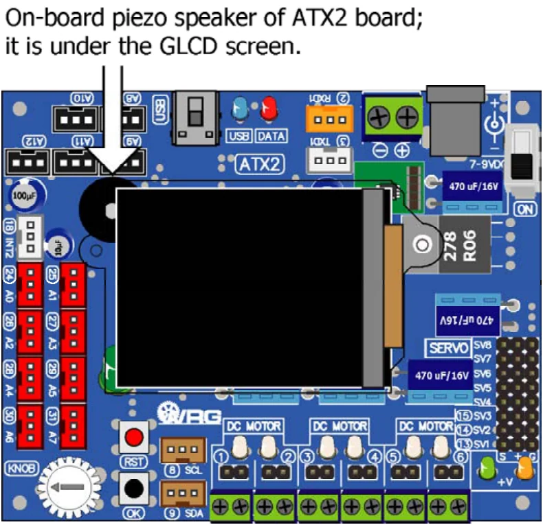

Activity 5 : Sound activity
The ATX2 controller board provides the sound output device on-board. It is piezo speaker. The speaker’s resonance frequency is range of about 300 to 3,000Hz. For programming to drive this device, use beep() and sound()function.

Listing A5-1 is example about how to use beep() function to drive the beep signal with 4 fixed frequencies every 1 second.
Listing A5-2 is example about how to use sound() function to drive the sound at any frequency in defined period.
(A5.1) Create the new sketch with Listing A5-1 and save as ATX2_BeepTest.ino file.
(A5.2) Compile and upload to the ATX2 board.
(A5.3) Run the sketch. Observe the operation of ATX2 piezo speaker.
To hear "beep" sound with 4 different frequencies in every 1 second.
(A5.4) Create the new sketch with Listing A5-2 and save as ATX2_SoundTest.ino file. Compile and upload to the ATX2 board again.
(A5.5) Run the sketch. Observe the operation of ATX2 piezo speaker.
To hear sound 2 frequencies alternately continuous.
#include <ATX2.h> // Include the main library
void setup()
{
OK();
}
void loop()
{
beep(); // Generate the default “beep” signal
sleep(1000);
beep(1); // Generate type 1 of beep signal
sleep(1000);
beep(2); // Generate type 2 of beep signal
sleep(1000);
beep(3); // Generate type 3 of beep signal
sleep(1000);
}#include <ATX2.h> // Include the main library
void setup()
{
OK();
}
void loop()
{
sound(500,500);
// Generate the 500Hz signal in 0.5 second
sound(2500,500); // Generate the 2500Hz signal in 0.5 second
}Original manual, pages 114–115